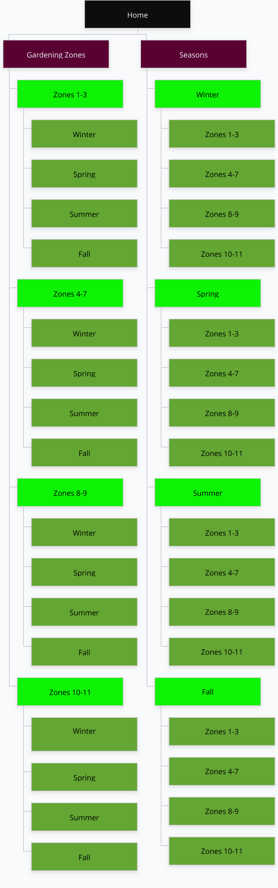

weathergarden.com
The site name will be weathergarden.com. The site will be about gardening ideas according to growing zones and local weather.
Site Purpose
Weather Garden will help novice gardeners explore gardening options according to their gardening zone. Users will be able to gain information on what to plant and when according to their zone. They will access up to date weather information for successful gardining. First they will access their zone, then season. They will then find a list of suitable plants for their area with up-to-date weather forecast for suitable seasonal planting ideas.
Target Audience and Scenarios
- Who: Gardening enthusiasts looking to expand their gardening knowledge.
- Age: any age.
- Education: High school and above
- Income: $40,000 and above
- Motivation: To find unique plants for the garden for every season.
Susan Royall
Susan is a stay-at-home mother who enjoys gardening. She is married, 48 years old, has 4 children and 3 dogs. She has just moved from California to Virginia. She wants to do some gardening in her new home, but knows that the plant she is familiar with in California are not suitable to the climate in her new home. She has no idea what is available in her area for her yard and she is unaccostomed to planting according to season. She is looking for ideas to beautify her yard.
Jordan Gillie
Jordan is 30, single, and just landed his dream job in Oregon. Jordan is a health nut. He loves the outdoors and wants to eat organically, but his budget is limited. He has turned to vegetable gardening in order to eat healthy on a budget. Jordan has some gardening experience, but wants to expand his seasonal gardening. He is looking to grow unique produce.
Site Map
Color Scheme
Primary Color
Secondary Color
Accent Color 1
Accent Color 2
Accent Color 3
Typography
Body - Playfair Display - Serif